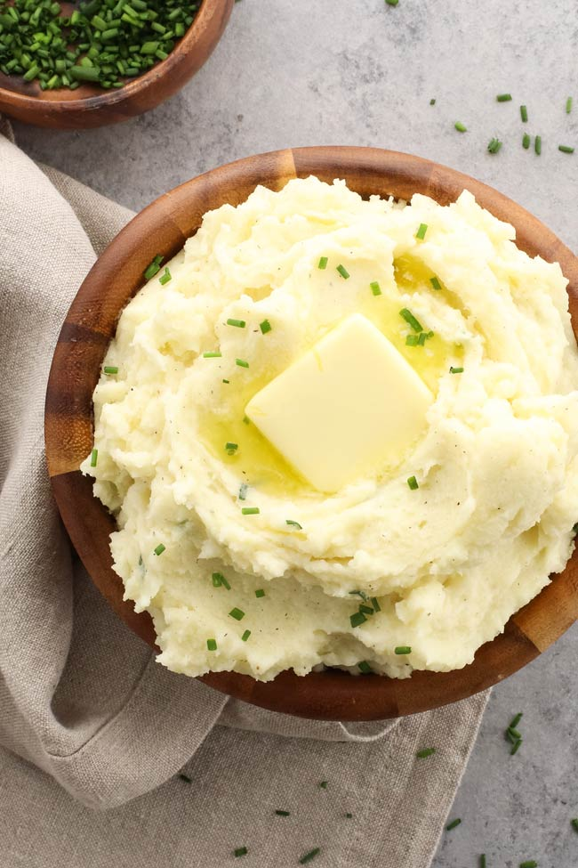

Creamy Mashed Potatoes

The best mashed potatoes.
This is my favorite way to cook mashed potatoes. They always turn out creamy and delicious. I will say that I tend to wing it with the measurements when making this dish, but just taste as you go, adjust as desired, and they should turn out great.
Ingredients:
- 5-6 russet potatoes, washed well, peeled, and diced into about 1" pieces
- 2 quarts heavy cream, you may not need the full 2 quarts but I usually get extra in case it's needed
- 1/4 cup or 1 stick of butter, unsalted if you prefer to control the amount of salt yourself
- sour cream, to taste
- 2-4 tablespoons chives, to taste, minced if fresh
- salt and pepper to taste
Directions:
- Wash, peel, and diced potatoes into roughly 1" pieces. Place potatoes into large pot or skillet. Add heavy cream until the potatoes are just barely covered. Add a few dashes of salt and some pepper.
- Bring to simmer and cook until potatoes are tender. Potatoes are tender and done when easily pierced with a fork. Turn off the heat, strain the potatoes, drain remaing cream from pot or skillet, and put the potatoes in a bowl.
- Mash the potatoes and return to pot or skillet. To achieve the super creamy consistency I use a potato ricer or food mill. You can use your preferred method to mash the potatoes.
- After the potatoes have all been mashed and returned to the pot or skillet, add butter (1-2 TBSPs at a time) and fold into potatoes. You don't need to use the full stick, so taste as you go and adjust to your liking.
- Turn the heat on low, and begin adding heavy cream and sour cream. Stir in until the potatoes have a creamy consistency. This part is subjective. Taste as you go until you reach the preferred consistency and flavor desired. Add salt and pepper to taste.
- Add chives and mix into the potatoes. Serve warm with additional chives as garnish if desired.
Notes:
- I make this in a very improvisational manner, but they always turn out well. Most of this comes down to taste and preference. If you want the potatoes more or less creamy, use more or less heavy cream. More or less tanginess, use more or less sour cream.
- Watch the heat in the final steps. You want enough heat to keep the potatoes warm after adding the heavy and sour creams, but not too much to cook, scald, or burn anytthing.
- These potatoes stand on their own, but also pair fantastically with a gravy.